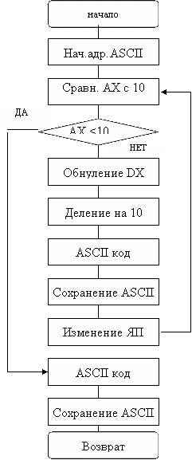
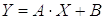

3. Методические указания к выполнению работы
3.1 Рекомендуемый порядок выполнения задания
3.2 Краткие сведения об инструментальных средствах языка Ассемблера tasm.exe и tlink.exe
3.3 Краткое описание структуры программы на языке программирования Ассемблер ASS-86
3.4 Преобразование двоичного кода в код ASCII
3.5. Использование системных прерываний в экранных операциях
4. Пример разработки программы на языке Ассемблера
4.1. Определение сегментов программы
4.2. Заполнение сегмента данных
4.3. Написание программного кода для вычисления заданного выражения в сегменте кода
4.5. Дополнение программы фрагментом вывода результатов в виде таблицы
Вариант задания определяется по последней цифре пароля студента (аналога номера студенческого билета или зачетной книжки).
Разработать и отладить программу на языке Ассемблера, которая выполняет следующие задачи:
а) Вычисляет выражение в соответствии с заданным вариантом математическое выражение (табл. 1) и для значений X от 0 до 10 и сохраняет в массив.
б) Распечатывает на экране полученный в пункте а) массив в формате в соответствии с вариантом (таблица 2)
в) Осуществляет операцию по обработке массива, полученного в п. а) в соответствии с вариантом (таблица 3) и распечатывает результат выполнения на экране.
г) Осуществляет вывод данных о разработчике: фамилия, инициалы, номер группы, номер варианта.
Содержание пояснительной записки
1. Титульный лист (Приложение А)
2. Содержание
3. Задание с выбором своего варианта из таблиц 1-4.
4. Общее описание разрабатываемой программы с обоснованием разделения ее на подпрограммы
5. Описание отдельных процедур в виде блок-схем с пояснениями.
6. Листинг программы с комментариями
7. Листинг результатов выполнения работы
8. Список использованной литературы
Таблица 1. Варианты вычисляемого выражения
|
№ вар. |
Выражение |
|
1 |
Y=2X2+2/(X-2)-COS(X) |
|
2 |
Y=3X3+2X-EXP(1-X) |
|
3 |
Y=2X2+Ö(X-3)-SIN(X) |
|
4 |
Y=4X2+2X-1+LN(X-3) |
|
5 |
Y=2X3+2/(X-2)-LG(X-2) |
|
6 |
Y=2X2-2/(X-2)-COS(X) |
|
7 |
Y=3X3 - 2X-EXP(1-X) |
|
8 |
Y=2X2+Ö(X-3)+SIN(X) |
|
9 |
Y=4X2+2X-1-LN(X-3) |
|
0 |
Y=2X3-2/(X-2)-LG(X-2) |
Таблица 2. Формат вывода массива результатов
|
№ вар. |
Расположение на экране |
|
1 |
* * … * |
|
2 |
* |
|
3 |
* |
|
4 |
* |
|
5 |
* * * * * |
|
6 |
* * |
|
7 |
* * * * * |
|
8 |
* |
|
9 |
* * * * * |
|
0 |
** |
Таблица 3. Операция по обработке массива результатов
|
№ вар. |
Операция |
|
1 |
поиск значения максимального элемента |
|
2 |
поиск значения минимального элемента |
|
3 |
вычисление среднего значения всех элементов |
|
4 |
поиск максимальной разности между соседними элементами |
|
5 |
поиск минимальной разности между соседними элементами |
|
6 |
вычисление суммы всех элементов |
|
7 |
подсчет количества элементов больших 1 |
|
8 |
подсчет количества элементов меньших 3 |
|
9 |
поиск значения максимального элемента |
|
0 |
поиск значения минимального элемента |
1. Юров В.И. Assembler.– СПб: Питер, 2006.
2. Абель П. Язык Ассемблера для IBM PC и программирования. – М.: Высшая школа, 1992 г.
3. Скэнлон Л. Персональные ЭВМ PC и XT. Программирование на языке Ассемблера.– М.: Радио и связь, 1989 г.
4. Пильщиков В.Н. Программирование на языке АСС IBM PC .–М.: Диалог-МИФИ, 1996 г.
5. Нортон П., Уилтон. IBM PC и PS/2.– Руководство по программированию. М.: Радио и связь, 1994 г.
Рекомендуется разбить выполнение работы на следующие этапы:
3.1 Организация вывода на экран фамилии, инициалов и номера варианта.
3.2 Организация вычисления заданного выражения в соответствии с вариантом для одного значения X, например, 0.
3.3 Организация вывода результата на экран
3.4 Организация циклического вычисления результата для заданного диапазона X от 0 до 10 с шагом 1.
3.5 Организация вывода всех результатов вычислений в соответствии с вариантом
3.6 Организация процедуры обработки массива в соответствии с вариантом и вывод результата на экране
Программы tasm и tlink предназначены для преобразования исходного текста программы на языке Ассемблера в исполняемый файл, который позволит убедиться в правильности работы программы.
Подготовка и запуск исполняемого файла состоят из следующих шагов:
- написание исходного текста программы в стандартном текстовом редакторе, например, Блокнот и сохранение его в рабочей папке под именем, например, prog.asm, где находятся программы tasm и tlink.
- запуск программной оболочки типа Far Manager
- запуск из командной строки программы tasm с именем файла prog.asm в качестве параметра:
tasm prog.asm
В результате сформируется объектный модуль prog.obj.
- запуск из командной строки программы tlink с именем файла prog.obj в качестве параметра:
tlink prog.obj
В результате сформируется исполняемый модуль prog.exe.
- запуск исполняемого модуля prog.exe.
Перед выполнением работы рекомендуется изучить краткое руководство по изучению Ассемблера, содержащееся в лабораторных работах.
Программа расчета выражения должна быть выполнена на языке ASS-86 и оформлена в виде законченного программного модуля. Программа предполагает наличие вычислительных операций для определения значений полинома и экранных операций вывода текстовой и цифровой информации. При программировании допустимо использование команд и регистров базового процессора I8086, а также старших модификаций, допускающих расширенные регистры и дополнительные команды (I386, I486). Допустимо также программирование вычислительных операций с использованием команд арифметического сопроцессора.
Листинг программы должен содержать все необходимые комментарии, облегчающие чтение и понимание программы. Желательно отдельные логически завершенные фрагменты оформлять в виде вызываемых подпрограмм.
Программа на Ассемблере состоит из логически самостоятельных частей, называемых сегментами. Для исполнения сегменты программы заносятся в отдельные участки оперативной памяти. Модуль программы может содержать от одного до трех типов сегментов – сегмент данных, стека и кода. Сегмент кода является обязательным, остальные могут отсутствовать (например, сегмент данных или стека) или быть объединены (сегмент кода и данных). Директиву ASSUME назначения сегментных регистров сегментам данных, стека, кода можно разместить перед сегментом кода или в первой его строке.
Начало и конец программного модуля обозначается с помощью связанных директив NAME и END. После директивы NAME следует имя модуля, а после директивы END помещается метка входа в программу (стартовая команда или имя процедуры).
Корректное завершение выполнения программы можно организовать с помощью системного прерывания INT 21H, передающего управление программе-диспетчеру DOS:
MOV AX,4C00H ;задание функции выхода из программы. INT 21H
После этого следует закрыть сегмент кода директивой:
имя сегмента кода ENDS ,
а затем завершить программный модуль:
END метка стартовой команды .
Во многих случаях удобно оформить программу в сегменте кода в виде основной процедуры типа FAR, содержащей главные операции в соответствии с алгоритмом, и набора процедур-подпрограмм. Основная процедура в последних строках содержит:
RETимя процедуры ENDP
Команда RET обеспечит корректный выход из программы после ее выполнения с помощью системного прерывания INT 20H. Для исполняемого файла *.ЕХЕ младший байт адреса этого прерывания находится в ячейке памяти с нулевым смещением в области префикса программного сегмента (PSP). Для того чтобы по команде RET процессор обратился по этому адресу, адрес должен находиться в стеке. Адрес формируется в виде SEG:OFFSET(сегмент:смещение). Значение SEG PSP при запуске программы содержится в сегментном регистре DS, а OFFSET=0 следует сформировать.
Таким образом, для корректного завершения программы в начале сегмента кода нужно поместить следующие операторы:
PUSH DS ;сохранение в стеке SEG PSP. XOR AX,AX ;формирование нулевого значения в AX. PUSH AX ;сохранение в стеке нулевого значения OFFSET
По команде RET процедуры типа FAR из стека будет извлечено два слова, при этом значение SEG загружается в CS , а значение OFFSET=0 заносится в IP, чем обеспечивается обращение процессора к адресу системного прерывания, передающего управление для завершения программы.
При запуске программы на исполнение логический адрес стартовой команды CS:IP, а также логический адрес стека SS:SP загружаются операционной системой автоматически; загрузку адреса (номера) сегмента данных в регистр DS следует запрограммировать. Пусть при описании сегмента данных ему присвоено имя DATSEG . Поскольку непосредственная загрузка сегментного регистра константой не разрешается, процесс косвенной загрузки DS будет таким:
MOV AX,DATSEG MOV DS,AX
Далее размещается программа, реализующая основной алгоритм задачи, а затем процедуры-подпрограммы, если они есть.
Для вывода сообщений на экран дисплея или принтер все двоично-кодированные числа должны быть преобразованы в ASCII –коды (Приложение Б).
Процесс преобразования заключается в последовательном делении двоичного числа на 10D и выделении остатков до тех пор, пока частное от деления не окажется меньше делителя , т.е. десяти. Все остатки и последнее частное образуют двоичные коды десятичных цифр, начиная с младшего разряда. Затем эти коды преобразуются в формат ASCII вписыванием «3» (0011В) в старшую тетраду каждого байта.
Блок-схема описанного алгоритма представлена на рис.3.1.
Как известно, для выполнения операции деления исходное число (делимое), а затем частное всегда размещается в аккумуляторе (AX), остаток – в регистре DX. Делитель – константа (10D) помещается в один из РОН. Область памяти для хранения ASCII цифр можно адресовать косвенно через базовый (BX) или индексные регистры (SI, DI). Причем исходное значение адреса должно указывать на ячейку памяти (ЯП) для младшей цифры – старший адрес в соответствии с правилом хранения ASCII символов (старший знак по младшему адресу) в отличие от принятого способа хранения обычных двоичных кодов (младший байт по младшему адресу).
Приведенный алгоритм обеспечивает преобразование 16-разрядных двоичных беззнаковых (положительных) чисел. Если требуется преобразование чисел со знаком, предварительно необходимо выявить знак числа. Для отрицательных чисел следует до преобразования изменить их знак (например, командой NEG), а после преобразования перед старшей цифрой в цепочку ASCII кодов, сохраняемых в оперативной памяти, вписать знак «-» (код 2DH).
Двоичный код 16-разрядного регистра может соответствовать любому 4-разрядному десятичному числу (от 0 до 9999). В формате 32-разрядного кода (двойное слово) могут быть представлены десятичные числа в диапазоне от 0 до 2*109.
Для преобразования в ASCII коды 32-разрядных двоичных чисел, соответствующих не более чем 8 десятичным разрядам (до 99 999 999), можно предложить следующий прием.
Исходное двоичное слово поместим в DX:AX и разделим на 10 000D. При этом и частное, и остаток не будут превышать 4 десятичных разрядов. Частное из AX следует временно сохранить в оперативной памяти (можно в стеке), а остаток из DX переместить в AX и преобразовать по приведенному выше алгоритму в четыре младшие десятичные цифры. Затем восстановить из памяти в AX частное и преобразовать его в четыре старшие десятичные цифры.
Следует заметить, что для анализа знака исходного числа (до преобразования) следует использовать его старшую часть, т.е. содержимое DX. Для изменения знака отрицательного числа вместо команды NEG необходимо преобразовать число из дополнительного кода в прямой с инверсией знакового разряда:
NOT DX ;инверсия старшего слова и знакового разряда. NOT AX ;инверсия младшего слова. ADD AX,0001H ;+1 к младшему разряду двойного слова. ADC DX,0000H ;учет возможного переноса от предыдущей операции.
Рис. 3.1. Блок-схема вывода чисел на экран
Программы на языке Ассемблера, реализующие операции ввода/вывода, используют функции системных прерываний.
Команда системного прерывания INT 21H передает управление в DOS для выполнения широкого набора функций, в том числе и связанных с операциями ввода/вывода. Наиболее часто используемые функции прерывания INT 21H представлены в Приложении В.
Команда системного прерывания INT 10H осуществляет передачу управления в BIOS для реализации операций ввода с клавиатуры и вывода на экран. Наиболее часто используемые функции прерывания INT 10H представлены в Приложении Г
Пусть требуется разработать программу, которая вычисляет значения выражения

для X от 1 до 5, A=2, B=3.
;Сегмент данныхData SEGMENTFamily DB 'Sidorov A.V.',13,10,'$';вывод на экран строки с фамилиейData ENDSStack SEGMENT Stack DB 100H DUP(?) ;стек размером 256 байтов.Stack ENDS ;Назначение соответствия между адресами сегментов и сегментными регистрами ASSUME CS:Code,DS:Data,SS:Stack Code SEGMENTStart:;место для написания главной программы MOV AX,DATA ;загрузка номера сегмента MOV DS,AX ; в регистр DS. MOV DX,OFFSET Family;загрузка в DX адреса симв.строки MOV AH,9 ;задание функции вывода строки. INT 21H ;вывод строки. MOV AL,0 ;завершение программы через MOV AH,4CH ; системную функцию возврата INT 21H ; в диспетчер MS DOS.Code ENDS END Start ;адрес начала программы.
В результате выполнения программы на экране должна быть напечатана символьная строка Family.
Data SEGMENTFamily DB 'Sidorov A.V.',13,10,'$';вывод на экран строки с фамилиейA DW 2D ;коэффициентыB DW 3DXmin DW 1DXmax DW 5DREZ DW ? ;результат в числовом форматеREZ_SHOW DB 10 DUP('@') ;результат в символьном формате;сегмент данных можно дополнять вспомогательными ;переменными по мере необходимостиData ENDS
Code SEGMENTStart:;место для написания главной программыCalculate:; вычисление заданного выражения MOV AX,XMIN MUL A ADD AX,B MOV REZ,AX MOV AX,DATA ;загрузка номера сегмента MOV DS,AX ; в регистр DS. MOV DX,OFFSET Family;загрузка в DX адреса симв. строки MOV AH,9 ;задание функции вывода строки. INT 21H ;вывод строки. MOV AL,0 ;завершение программы через MOV AH,4CH ; системную функцию возврата INT 21H ; в диспетчер MS DOS.Code ENDS END Start ;адрес начала программы.
Теперь необходимо дополнить программу преобразованием результата в символьную форму.
Num_To_Ascii: MOV SI,REZ_SHOW ;загрузка адреса начала результата в симв. форме SUB SI,SI MOV AX,REZ ;загрузка результата в числовой формеL1: CMP AX,10 JB L2 SUB DX,DX DIV 10 ;Выделение очередной цифры результата путем деления на 10 ADD AX,48 ;перевод цифры в код соответствующего символа MOV [SI],AL ;копирование символа в строку результата в симв. форме INC BYTE PTR[SI];передвижение к ячейке памяти для следующего символа JMP L1L2: MOV AX,DX ;перевод в символьную форму самой младшей цифры ADD AX,48 MOV [SI],AL INC BYTE PTR[SI] MOV AL,13 ;завершение строки результата MOV [SI],AL INC BYTE PTR[SI] MOV AL,10 MOV [SI],AL INC BYTE PTR[SI]
Теперь необходимо дополнить программу циклического вычисление выражения и отображения результатов для значений переменной Х в заданном диапазоне. Перед фрагментом программы, в котором вычисляется значение заданного выражения, добавьте инициализацию счетчика цикла
MOV CX,XMIN ;задание начального состояния переменной цикла
После фрагмента, вычисляющего значение выражения, следует добавить строки
CMP CX,XMAX ;сравнение переменной цикла с граничным значением JNE Calculate ;переход к началу фрагмента, выполняемого в цикле
Рассмотрим некоторые примеры использования системных прерываний для вывода информации на экран:.
ПРИМЕР 1. Задание режима экрана.
MOV AH,00H ;функция задания режима экрана MOV AL,03H ;ЦВ текстовый, 25 строк по 80 знаков INT 10H
Данная функция вместе с заданием режима обеспечивает очистку экрана.
ПРИМЕР 2. Очистка экрана прокруткой вверх.
MOV AH,06H ;функция прокрутки вверх. MOV AL,00H ;очистка всего экрана. MOV BH,07H ;атрибут пробела-ЧБ нормальной яркости. MOV CX,0000H ;верхняя левая позиция. MOV DX,184FH ;нижняя правая позиция (Y=24, X=79). INT 10H
ПРИМЕР 3. Установка курсора в заданную позицию.
MOV AH,02H ;функция перемещения курсора. MOV BH,00H ;страница 0. MOV DH,05H ;строка 5. MOV DL,0CH ;столбец 12. INT 10H
ПРИМЕР 4. Вывод символа на экран.
MOV AH,09H ;функция вывода символа.MOV AL,2AH ;символ ' *'.
MOV BH,00H ;страница 0. MOV BL,0FH ;белый по черному, яркий. MOV CX,01H ;один символ. INT 10H
ПРИМЕР 5. Вывод горизонтальной линии.
MOV AH,09H ;функция вывода символа. MOV AL,0C4H ;символ “_“ (горизонтальная черточка). MOV BH,00H ;страница 0. MOV BL,0FH ;белый по черному, яркий. MOV CX,19H ;25 символов. INT 10H
ПРИМЕР 6. Чтение системной даты.
MOV AH,2AH ;функция чтения даты. INT 21H
Для вывода даты на экран необходимо извлечь и преобразовать в ASCII код значения: год – из регистра CX, месяц – из регистра DH, число – из регистра DL.
ПРИМЕР 7. Вывод строки символов.
Предположим, что преобразованная в коды ASCII дата хранится в оперативной памяти в переменной DAT, определенной в сегменте данных:
DAT DB ' ',0DH,0AH,'$' MOV AH,09H ;функция изображения строки на экране. LEA DX,DAT ;загрузка адреса строки символов. INT 21H
Следует отметить, что символ $ обязателен и является ограничителем области вывода, а коды 0DH и 0AH обеспечивают перевод строки и возврат каретки печатающего устройства, если следующее сообщение должно начинаться с новой строки. Символом $ в строке символов можно разделить фрагменты, которые должны выводиться отдельно. Например, из строки:
MONTH DB 'январь$февраль$март$'
При загрузке в DX адреса буквы 'ф' будет выведено только слово 'февраль’.
ПРИМЕР 8. Ввод символа с клавиатуры и изображение его на экране.
MOV AH,01H ;функция ввода символа с клавиатуры. INT 21HТаблица кодировки символов для DOS
(Альтернативная кодировка ГОСТа)
с т а р ш а я ч а с т ь к о д а
|
|
|
D |
0 |
16 |
32 |
48 |
64 |
80 |
96 |
112 |
128 |
144 |
160 |
176 |
192 |
208 |
224 |
240 |
|
|
D |
H |
0 |
1 |
2 |
3 |
4 |
5 |
6 |
7 |
8 |
9 |
A |
B |
C |
D |
E |
F |
|
|
0 |
0 |
|
► |
|
0 |
@ |
P |
' |
p |
А |
Р |
а |
░ |
└ |
╨ |
р |
Ë |
|
м |
1 |
1 |
☺ |
◄ |
! |
1 |
A |
Q |
a |
q |
Б |
С |
б |
▒ |
┴ |
╤ |
с |
ë |
|
л |
2 |
2 |
☻ |
↕ |
" |
2 |
B |
R |
b |
r |
В |
Т |
в |
▓ |
┬ |
╥ |
т |
Є |
|
а |
3 |
3 |
♥ |
‼ |
# |
3 |
C |
S |
c |
s |
Г |
У |
г |
│ |
├ |
╙ |
у |
є |
|
д |
4 |
4 |
♦ |
¶ |
$ |
4 |
D |
T |
d |
t |
Д |
Ф |
д |
┤ |
─ |
╘ |
ф |
Ï |
|
ш |
5 |
5 |
♣ |
§ |
% |
5 |
E |
U |
e |
u |
Е |
Х |
е |
╡ |
┼ |
╒ |
х |
ï |
|
а |
6 |
6 |
♠ |
▬ |
& |
6 |
F |
V |
f |
v |
Ж |
Ц |
ж |
╢ |
╞ |
╓ |
ц |
Ў |
|
я |
7 |
7 |
· |
↨ |
' |
7 |
G |
W |
g |
w |
З |
Ч |
з |
╖ |
╟ |
╫ |
ч |
ў |
|
|
8 |
8 |
|
↑ |
( |
8 |
H |
X |
h |
x |
И |
Ш |
и |
╕ |
╚ |
╪ |
ш |
° |
|
ч |
9 |
9 |
○ |
↓ |
) |
9 |
I |
Y |
i |
y |
Й |
Щ |
й |
╣ |
╔ |
┘ |
щ |
● |
|
а |
10 |
A |
◙ |
→ |
* |
: |
J |
Z |
j |
z |
К |
Ъ |
к |
║ |
╩ |
┌ |
ъ |
∙ |
|
с |
11 |
B |
♂ |
← |
+ |
; |
K |
[ |
k |
{ |
Л |
Ы |
л |
╗ |
╦ |
█ |
ы |
Ö |
|
т |
12 |
C |
♀ |
∟ |
, |
< |
L |
\ |
l |
| |
М |
Ь |
м |
╝ |
╠ |
▄ |
ь |
№ |
|
ь |
13 |
D |
♪ |
↔ |
- |
= |
M |
] |
m |
} |
Н |
Э |
н |
╜ |
═ |
▌ |
э |
¤ |
|
|
14 |
E |
♫ |
▲ |
. |
> |
N |
^ |
n |
~ |
О |
Ю |
о |
╛ |
╬ |
▐ |
ю |
■ |
|
|
15 |
F |
☼ |
▼ |
/ |
? |
O |
_ |
o |
|
П |
Я |
п |
┐ |
╧ |
▀ |
я |
|
Функции прерывания INT 21H
|
Код в АН |
Функция |
Входные регистры |
Выходные рег. |
|
1 |
Ожидание ввода символа и отображение его на экране |
|
AL - символ |
|
2 |
Изображение символа на экране |
DL - символ |
|
|
5 |
Печать символа |
DL - символ |
|
|
9 |
Изображение строки на экране |
DS:DX –адрес строки |
|
|
A |
Чтение строки с клавиатуры |
DS:DX –адрес буфера для хранения строки |
|
|
2A |
Чтение системной даты |
|
CX –год, DH – месяц, DL-день |
|
2B |
Установка системной даты |
CX – год, DH –месяц, DL - день |
AL=0,если дата верна, AL=FF, если ошибочна |
|
2C |
Чтение системного времени |
|
CH-часы, CL- мин, DH-сек, DL-сотые доли сек |
|
2D |
Установка системного времени |
CX-часы, мин, DX- секунды |
AL=0 –верно, AL =FF- ошибочно |
|
4C |
Возврат в диспетчер DOS |
AL – 00 (код возврата) |
|
ПРИМЕЧАНИЯ: Функция 9: Строка символов должна заканчиваться $.
Функция 2B: При установке даты можно использовать год - до 2099, месяц- 1...12, день- 1...31.
Функция 2D: При установке времени используются значения: часы – 0...23, мин-0...59, сек- 0...59, сотые доли сек- 0...99.
Функции прерывания INT 10H.
|
Код в АН |
Функция |
Входные регистры |
Выходные рег. |
|
0 |
Задание режима экрана |
AL - код режима |
|
|
2 |
Перемещение курсора в Y, X |
DH - Y (строка 0...24), DL - X (столбец 0...79), BH - номер страницы(0...4) |
|
|
3 |
Чтение положения курсора |
BH - номер страницы(0...4) |
DH,DL - Y,X |
|
6 |
Прокрутка активной страницы вверх |
AL - число строк , CH,CL - координаты верхнего левого угла, DH,DL - координаты нижнего правого угла, BH – атрибут строки пробелов |
|
|
7 |
Прокрутка активной страницы вниз |
То же, что и для функции 6 |
|
|
8 |
Чтение символа в текущей позиции курсора |
BH - номер страницы(0...4) |
AL- символ, AH- его атрибут |
|
9 |
Запись символа и нового атрибута в текущую позицию |
AL- символ BH - номер страницы(0...4) BL –атрибут символа CX –счетчик символов |
|
|
A |
Запись символа без изменения атрибута в текущую позицию курсора |
То же, но без BL |
|
|
E |
Вывод символа на экран и перемещение курсора в следующую позицию |
То же, что и для 9 |
|
ПРИМЕЧАНИЯ:
Функция 0: AL:= 2 –текстовый ЧБ, 80х25; AL:=3 –текстовый ЦВ, 80х25;
Функция 6: Содержимое AL определяет число остающихся строк, строки внизу заполняются пробелами; при AL=0 происходит очистка всего экрана.
Функции 6 и далее предполагают использование байта-атрибута изображаемых символов и фона. Отдельные биты атрибута кодируют следующие параметры:
|
7 |
6 |
5 |
4 |
3 |
2 |
1 |
0 |
|||
|
BL |
R |
G |
B |
I |
R |
G |
B |
|||
|
|
Ф |
О |
Н |
|
С |
И |
М |
В |
О |
Л |
Бит 7 (BL) при установке в 1 обеспечивает эффект мигания символа.
Бит 3 (I) при установке в 1 обеспечивает повышенную яркость символа.
Биты 6,5,4 и 2,1,0 определяют цвет фона и символов соответственно. При этом
R – красный, G – зеленый, B – синий цвет. Значения 1 обеспечивают наличие соответствующего цвета, 0 - его отсутствие. Можно заметить, что комбинация 000 соответствует черному, а 111 – белому цвету.
R+G дает желтый цвет, R+B – пурпурный (сиреневый), G+B – голубой.
Примеры байтов – атрибутов:
00000000 (0H) –черный по черному - неотображаемый символ (для пароля),
00000111 (07Н) – белый по черному нормальной яркости,
10001111 (8FН) –ярко белый по черному с миганием;
01110000 (70Н) – черный по белому;
00101110 (2ЕН) – ярко-желтые символы на зеленом фоне;
10001100 (8СН)-мигающие ярко-красные символы на черном фоне.
Дополнительные сведения см [2, с.135, с.144].